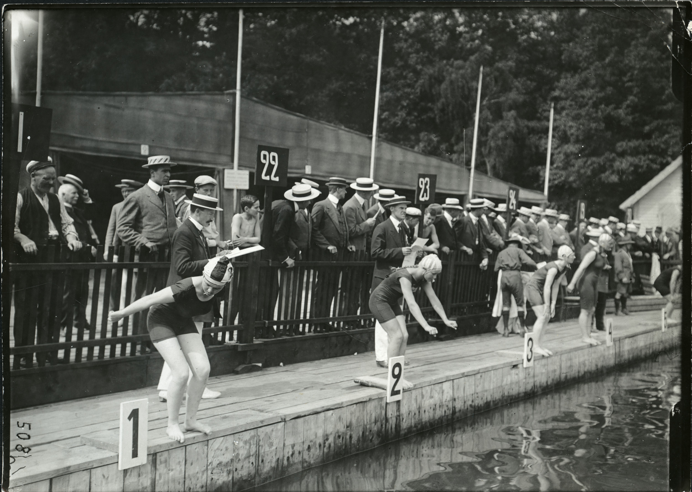
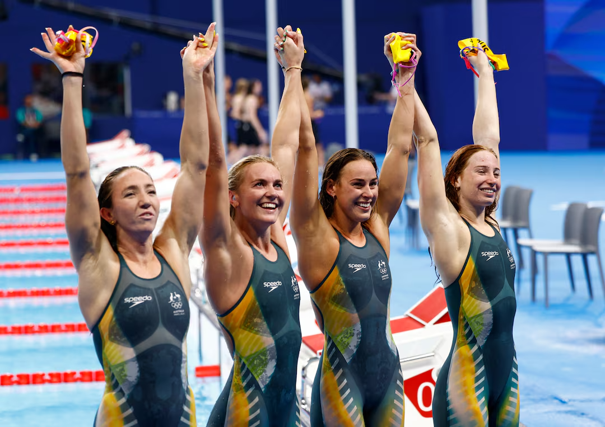

Making Waves: Women in Aquatic Olympics Through The Years
Have you ever thought about how the Olympics have changed over time? Beyond the thrill of competition,
the games also offer a lens into how sport culture has gradually shifted toward greater inclusion and
representation.
The story we want to highlight within this evolution is that of women. In the event’s century-long history, 2012 was the first year that women participated in every sport on the program. In this article, we aim to focus specifically on how this change manifests in aquatic sports. By examining trends in performance between men and women, examining trends in women’s participation across aquatic sports, and exploring the patterns that relates to athletic strength and success, we aim to shed light on the achievements and ongoing journey of women in aquatic Olympics.
The story we want to highlight within this evolution is that of women. In the event’s century-long history, 2012 was the first year that women participated in every sport on the program. In this article, we aim to focus specifically on how this change manifests in aquatic sports. By examining trends in performance between men and women, examining trends in women’s participation across aquatic sports, and exploring the patterns that relates to athletic strength and success, we aim to shed light on the achievements and ongoing journey of women in aquatic Olympics.
In 1912, Fanny Durack from Australia won the first Olympic Gold medal earned by a woman in 100m freestyle, with a time of 1 minute and 22.2 seconds.

An image of Fanny Durack at the 1912 Olympics in Stockholm, Sweden.
Since then, women have only been catching up to men.
Graph made by Renee Singh
The speed of the athlete winning an Olympic Gold Medal for 100m freestyle, men and women in 20 year increments from 1912-2012. Over time, women show the largest decrease in overall time, catching up to men as seen from the gap getting shorter.
1912 was the first year women were allowed to participate since the event beginning in 1896, and participation has skyrocketed since.

An image of 1912 Olympics in Stockholm, Sweden.
The Evolution of Women’s Participation in Swimming
Graph made by Megan Pham
Women's participation in Olympic swimming rose steadily from 1912 to 2016 as access,
support, and visibility for women expanded. The gaps in 1916, 1940, and 1944 appear
because the Games were canceled during World War I (1916) and World War II (1940, 1944).
The evolution of women’s participation in swimming shows how far the sport has come. Early
restrictions and limited opportunities kept many women out of major competitions, but steady
progress over the decades opened more doors. As rules changed and support increased, more
women entered the pool, competed at higher levels, and gained the visibility they deserved.
This growth reflects a larger shift toward inclusion and highlights how expanding access has
allowed generations of female athletes to rise and make their mark.
The Global Rise of Women in Olympic Swimming
Graph made by Megan Pham
Women’s Olympic swimming began with participation from only a handful of countries. Over the following century, the movement
toward gender inclusion in sports helped more nations develop and support female swimmers. This interactive map reveals how
that growth unfolded around the world. Slide through the years to watch new countries appear as women gained broader access
to training, competition, and representation on the Olympic stage. You can also press on any country to see how many Olympics
its women have participated in and when their involvement began.
Graph made by Renee Singh
Graph made by Charlene Chang
We hypothesize that age, height, and weight may predict faster swim times. With this idea in mind, let's turn to the data to find out whether these traits actually relate to faster results. Graph made by Charlene Chang
Our analysis shows that age, height, and weight have little to no correlation with Olympic swimming performance. Female medalists come in a wide range of body types, which demonstrates that success is not determined solely by physical metrics.
When we consider trends in women’s participation, country representation, and comparisons with men’s performance , we see that progress in aquatic sports involves more than individual physiology. Together, these patterns highlight the evolving landscape of women’s Olympic swimming and set the stage for exploring other factors that contribute to performance and achievement.
Top 10 Fastest Women's 100m Strokes
Olympic Gold Medal Winners - Ranked by Speed
A table of the fastest times of Olympic athletes for 4 different 100m swimming strokes. We can see that while generally athletes get faster over time, there are a few years where athletes from previous games were marginally faster than the next. Note that height and weight data isn't public for every athlete, resulting in a few empty cells.
What Do Olympic Aquatic Medalists Look Like?
Explore the Demographic Trends Behind the PodiumGraph made by Charlene Chang
Distribution of age, height, and weight for Olympic aquatic medalists, with most athletes falling between 16–22 years old, 170–178 cm (5'7"–5'10") tall, and 60–67 kg (132–148 lbs).
But...Are these traits enough to explain winning performance, or do other factors matter more?
Now that we’ve explored the distribution, let’s see whether these traits actually correlate with performance.Do Age, Height, and Weight Predict Swimming Performance?
We hypothesize that age, height, and weight may predict faster swim times. With this idea in mind, let's turn to the data to find out whether these traits actually relate to faster results. Graph made by Charlene Chang
Across Age, Height, and Weight, we found no strong or consistent relationship with performance. Data points are widely scattered, and none of these variables show meaningful linear correlations with race results. This aligns with our regression analysis, which also indicated that Age, Height, and Weight have limited predictive power for women’s 100m freestyle gold-medal times. The small sample size (19 data points) further reduces our ability to detect trends, though minor non-linear patterns may still exist. Overall, these physical attributes alone do not explain the variation in winning times.
Analysis Takeaways
Our analysis shows that age, height, and weight have little to no correlation with Olympic swimming performance. Female medalists come in a wide range of body types, which demonstrates that success is not determined solely by physical metrics.
When we consider trends in women’s participation, country representation, and comparisons with men’s performance , we see that progress in aquatic sports involves more than individual physiology. Together, these patterns highlight the evolving landscape of women’s Olympic swimming and set the stage for exploring other factors that contribute to performance and achievement.
